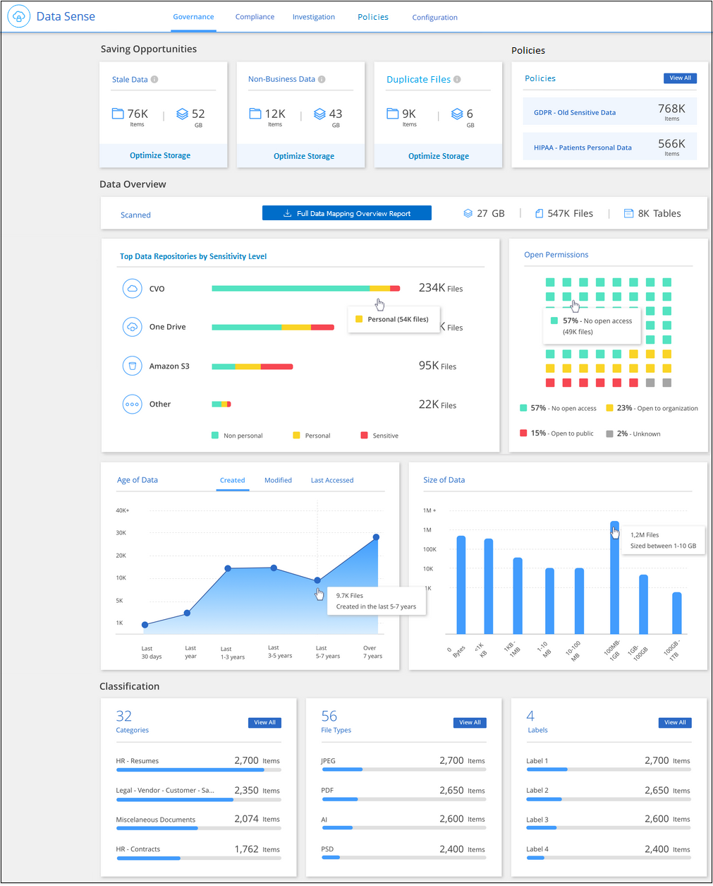

请求文档变更
请求文档变更 在 GitHub 上编辑
在 GitHub 上编辑 提供者指南
提供者指南查看有关存储在组织中的数据的监管详细信息
控制与组织存储资源上的数据相关的成本。Cloud Data sense 可确定系统中陈旧数据，非业务数据，重复文件和非常大的文件的数量，以便您可以决定是要删除某些文件，还是将某些文件分层到成本较低的对象存储。
此外，如果您计划将数据从内部位置迁移到云，则可以在移动数据之前查看数据的大小以及任何数据是否包含敏感信息。
监管信息板
" 监管 " 信息板可提供相关信息，以便您提高效率并控制存储资源上存储的数据的相关成本。

节省机会
您可能需要调查 saving opportunities 区域中的项目，以确定是否存在任何数据，您应该删除这些数据，或者将这些数据分层到成本较低的对象存储中。单击每个项可在 " 调查 " 页面中查看筛选后的结果。
-
* 陈旧数据 * —上次修改时间超过 3 年的数据。
-
* 非业务数据 * - 根据类别或文件类型视为与业务无关的数据。其中包括：
-
应用程序数据
-
音频
-
可执行文件
-
映像
-
日志
-
视频
-
其他（一般 " 其他 " 类别）
-
-
* 重复文件 * —在要扫描的数据源的其他位置复制的文件。 "查看显示的重复文件类型"。
数据概述
简要概述正在扫描的所有数据。单击按钮可下载完整的数据映射报告，其中包括所有工作环境和数据源的使用容量，数据期限，数据大小和文件类型。请参见 "数据映射报告" 了解完整的详细信息。
按数据敏感度列出的前几个数据存储库
Top Data Repository by Sensitivity level_ 区域最多可列出包含最敏感项目的前四个数据存储库（工作环境和数据源）。每个工作环境的条形图分为：
-
非个人数据
-
个人数据
-
敏感的个人数据
您可以将鼠标悬停在每个部分上以查看每个类别中的项目总数。
单击每个区域以在 " 调查 " 页面中查看筛选后的结果，以便您可以进一步调查。
按打开权限类型列出的数据
_Open Permissions_area 显示正在扫描的所有文件中存在的每种类型的权限的百分比。此图表显示了以下类型的权限：
-
无开放访问
-
对组织开放
-
打开公有
-
未知访问
您可以将鼠标悬停在每个部分上以查看每个类别中的文件总数。单击每个区域以在 " 调查 " 页面中查看筛选后的结果，以便您可以进一步调查。
数据期限和数据大小图
您可能需要调查 age 和 size 图中的项目，以确定是否存在任何数据，您应该删除这些数据，或者将这些数据分层到成本较低的对象存储中。
您可以将鼠标悬停在图表中的某个点上，以查看有关该类别中数据的使用期限或大小的详细信息。单击可查看按此期限或大小范围筛选的所有文件。
-
* 数据期限图 * —根据数据创建时间，上次访问时间或上次修改时间对数据进行分类。
-
数据图形的大小 * —根据大小对数据进行分类。